第12屆OpenHCI人機互動工作坊
Organizers
籌辦單位
Co-organizers
協辦單位

.png)
第12屆OpenHCI人機互動工作坊

人類、科技與環境三方共融之處，是我們渴望打造的綠洲。
Cyber是人與科技產物的共融，而Oasis是人類對於理想未來的描繪。
兩者結合將帶來衝擊與新生，從瞬時的靈感，到反覆的失敗與嘗試，再到生生不息的延續，考驗著人類如何與科技從共融達到共榮，乃至永續發展之道。
而你，想像中的CyberOasis，又是什麼模樣呢？
Human-Computer Interaction(HCI)為近年來相當活躍的跨領域學門。 相較於其他專門領域， HCI 學門獨特的複合特性，使得其創造過程需要高度的跨領域合作。 研究的著眼點不但訴求技術、 更試圖從以人為本的角度去探討，以創造更佳的使用者經驗。
OpenHCI'22 是第十二屆由學生自治籌備的人機互動工作坊，旨在推廣人機互動學門與跨領域合作。 在五天的工作坊期間，來自不同領域的學員會經歷一系列講座與課後實作演練，深入完整 HCI 設計流程， 透過合作溝通以實踐構想，將無盡的創意展現給世界！
本活動希望能夠以推廣 HCI 為主要宗旨，招收工程、設計及跨領域背景的學生， 共同學習並進行跨領域的合作，探索人類生活空間中與周遭環境、物件或工具的互動模式。
為期五天的工作坊，期盼參與者能以此概念體察其日常經驗裡的互動缺口或議題， 實際動手解決問題或創造出新的意義，進而尋思更和諧的人機互動遠景。
8 / 13 - 8 / 14
前置工作坊結束後兩週：
8 / 26 - 8 / 28
今年工作坊分為兩部分，共 5 天：
全日活動時間約為 8:30～19:00 （視各組討論時間而定）。
前置工作坊：國立臺灣科技大學
正式工作坊：松菸創作者工廠
為推廣 HCI 學門，本活動免報名費，僅收取保證金、保險費用及其他費用。
獲得錄取資格之學員，請於指定時間內繳交各項費用，繳費後方能取得正式資格。
為維持完整學習體驗，工作坊實行每日簽到，學員需全程參與以獲得保證金全額退還。
TAICHI 2022（第八屆臺灣人機互動研討會）為臺灣人機互動學會主辦，
並由來自各大專院校、產業界的人機互動領域專家共同籌辦，集結各領域、院校、產業間的跨界合作。
大會於10月15日至10月16日於國立陽明交通大學六家校區客家文化學院舉行。
當人工智慧（artificial intelligence，AI）已廣泛應用於人類世界，它所帶來的爭議、福祉與變遷皆備受矚目。
在社會、經濟、健康或環境等眾多領域的應用上，人工智慧如何在克服議題的同時，依然保有道德倫理之底線？
本次大會主題「AI for Equity, Wellbeing & Sustainability」，
旨在探討人工智慧如何貼近真實世界與人性的萬千變化、如何為世界帶來福祉，以及如何實踐永續的未來。
你想要讓自己的作品在台灣人機互動年度盛會TAICHI被看見嗎？
TAICHI 是台灣人機互動研究領域中最具代表性的研討會，由台灣人機互動學會所舉辦的年度會議，
為國內跨領域人機互動學者與社群，提供一個意見交換以及成果交流的年度盛會。
OpenHCI 工作坊結束之後，
資訊科技快速發展的今日，設計物將具備更高的智能，以及更高的自主性與能動性。 上世紀模態邏輯學及文學領域中所發展的可能世界理論，將人類所認知的實在(reality)從現實世界(actual world)拓展到可能世界(possible world)。 然而，以人類為中心所建構的可能世界，正在面臨新的挑戰：智慧型的物件，如何邀請人類進入非人類中心的可能世界並召喚纏結的經驗。
全國各大專院校升大三以上在學生，含學碩博應屆畢業生及碩博新生。
一律填寫線上表單報名。本活動以報名資料填寫內容作為錄取參考依據，報名先後順序不列入計分標準。
2022 年 7 月 18 日（一）
至 2022 年 7 月 25 日（一） 23:59
正取名單公佈： 2022 年 8 月 1 日（一） 網路公布與信件通知
遞補備取通知： 2022 年 8 月 3 日（三）
為推廣 HCI 學門，本活動
獲得錄取資格之學員，請於指定時間內繳交各項費用，繳費後方能取得正式資格。
為維持完整學習體驗，工作坊實行
包含「基本資料」和「IDcard 製作」兩部份：
包含個人基本資料、相關經歷等內容。
包含「個人簡歷」、「參與工作坊動機」、「作品集」、「回答問題」，請將檔案附在表單的最後，也請注意檔案連結權限。
1.
IDcard 檔案請依製作內容說明自行製作與編排，並輸出一份
2.
IDcard 檔名格式：
3.
若檔案格式或檔名格式不符，造成漏檔，或是忘記開放雲端連結權限，報名者請自行負責。
請放個人簡歷、說明報名動機，表達格式不限。
請放上一個最滿意的作品（研究、專題、設計皆可），可以明確表達作品的脈絡：作品目標、想要傳達的意象、流程、解決什麼問題、如何解決問題等。
請從你的經驗中去發想並回答以下問題，共分為團隊題與分析題兩部分，可透過文字、圖片等形式表達。
請簡單分享一個你過去印象深刻的專案經驗。（說明在團體中扮演的角色、遇到怎麼樣的困難及如何解決。）
OpenHCI 2022 的主題為 CyberOasis（賽博綠洲），意在描繪人類、科技物與環境三方共融的未來藍圖。
而近幾年國際與各方企業也十分熱衷討論的聯合國 SDGs，也同樣期望能達到環境永續、身心健全、社會公平等面向。
請參考今年的主題論述與聯合國提出的SDGs，分享一項你認為具有參考性的案例，內容須包含：
a. 這個案例具體在解決什麼樣的問題？
b. 「科技」在這個案例扮演什麼樣的角色？
c. 「人」在這個案例扮演什麼樣的角色？
d. 科技和人在這個案例有什麼樣的互動？
未在指定報名期限內完成報名程序者，視為放棄報名資格，會依據備取順序遞補。
關於報名有任何問題，歡迎聯絡主辦單位人事組：human@openhci.com
有關正備取名單的最新資訊請參照Open HCI 臉書社群。
Q1 : 應屆畢業生可以參加嗎？
Q2 : 活動期間某些時段無法參加，可以請假嗎？
Q3 : 工作坊的時間怎麼安排？
每日活動開始時間皆為08:30，結束時間為21:00 - 21:30。
Q4 :疫情會影響活動的舉行嗎？
不過我們會根據北北基案例個數及臺北市政府對群聚活動的限制，決定是否線上舉辦或停辦。
查看更多...
Q1 : 什麼是IDcard呢？要怎麼寫？
Q2 : IDcard 的一頁作品集可以放什麼？
請選擇「一」個你最滿意、最喜歡且足以代表你專業能力的作品來進行介紹，
而這個作品可以是研究、專題或設計。
Q3 : 對IDcard第三頁中要回答的內容還是沒什麼想法怎麼辦？
Q4 : IDcard內作品的相關隱私規範？
查看更多
透過 Eggy時光雞，使用者可以自訂倒數時間，當時間倒數結束，Eggy時光雞會以聲音提醒使用者物品已經長時間未使用，提供其丟棄的判斷依據； 同時透過垃圾袋自動彈出，來增加使用者將物品丟棄的動力。此外，Eggy時光雞以小雞破蛋的可愛形象與親切提示音，增加互動的趣味性。
蒲呼呼是款讓離家子女能夠陪伴遠方家人的居家型互動燈光裝置。
使用者可利用蒲呼呼錄下平時無法當面說出口的關心話語，透過「吹熄」燈光發送錄音，就像吹送蒲公英的種子，將思念傳遞給遠方的家人。
當家人在為植物澆水時，就蒙聽到語音訊息，並聯動讓使用者的蒲呼呼再度亮起。即使彼此分隔兩地，連結依舊生生不息。
經典，人們都認同其存在之重要性，卻深埋在彼此都不願碰觸的地底深處。 呼應此次「莫比烏斯」舊物再造之精神,我們團隊將「出土」經典，向大眾推廣並協助他們理解經典。 Readee將讓您體會到，經典便在生活之中，在我們的周遭，理解它不再是遙不可及的夢想！
找到心的平靜 感受成長後的自己
我們如何幫助陷入失戀低潮者梳理混沌思緒、走出低潮迴圈？
「尋找湖泊」是一趟有終點的旅行。提供失戀者在旅途中透過語音心情記錄、沙遊世界建構、寄送與簽收他人沙遊風景明信片、
與角色問答及反思等過程中進行自我覺察、釐清低潮時的混沌思緒,並勇於主動走到戶外體驗新環境跳脫迴圈場景。
希望所有失戀者在旅程盡頭之處抵達象徵內心的湖泊時,能找到屬於自己的平靜、感受成長後的自己。
「將日常回憶編織成一幅最美的風景。」
回憶,是日常的點滴，是經驗的積累，承載了人與人之間的羈絆，見證了痛苦、歡笑與成長。回憶，
是舊的情感再度被喚起，是過去的種種再度陪伴身旁，時時提醒我們初衷，成為我們的精神支柱。
但回憶不易保存，想要憶起過往也時常遇到重重阻礙，失去記憶讓我們忽視，生活的時時刻刻都十足珍貴。
因此，我們設計了「memoscape」,融合了底片機與場記板，暗喻剪接珍貴的日常生活；
同時結合記憶與日曆，將生活日常回憶化，打造出一張張刻錄生活、獨一無二的日曆卡。
日曆卡拼接成畫，隨著日子的流逝，創造出僅屬於自己，一幅最美的風景。 讓使用者在不斷前進時，也可以感受到過往的溫度。
日子層層疊疊，過去的記憶形塑我們如今的樣貌，銘記每一天的重要的時刻，就是珍視一路走來的自己。
疫情時代，遠距工作成為主流之一，改變實體辦公室中既有的互動關係，人與人之間的溝通習慣也被迫重新建立。 以此為出發點，我們設計出「Walking Workie」，一個桌上型互動裝置，讓你化身為虛擬小人，在上班時間於裝置中漫步， 並在其中關心同事的工作狀態，重建辦公室陪伴感，並讓團隊增進對彼此的理解與信任。